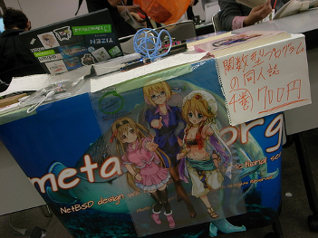
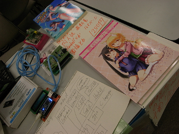
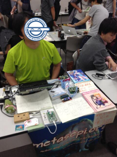
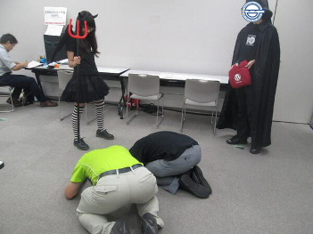
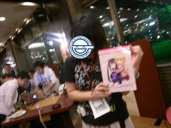
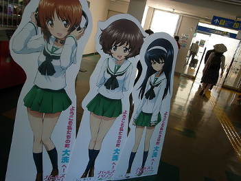

Metasepi作戦会議 第4回を オープンソースカンファレンス2013 Hokkaido と mbed祭り in Sapporo で開催したでゲソ。
今回の作戦会議はmbedマイコン上でのプログラミングにHaskell言語を使う方法を説明してみたでゲソ。 mbedマイコンにはEthernetが付いているので、LCDパネルと組み合わせてRSSリーダーをデモとして作ってみたでゲソ。 このデモは http://www.reddit.com/ のRSSを読んで、その一番目の記事のタイトルをLCDにスクロール表示するでゲソ。
ARM社のmbedチームの人とクラウドコンパイラについて話を聞けたので、大変有意義な会だったんじゃなイカ？ もっといろんなプラットフォームを侵略してみたいでゲッソ。
宿はいつもカプセルホテルに安く泊っていたので、すすきの近辺のカプセルホテルを3つほど別々に泊って比較してみたでゲソ。 結論としては ニコーリフレ が一番いごごちがよかったでゲソ。
札幌滞在中のハック机は スターバックス コーヒー 札幌南一条店 で確保したでゲソ。
というメリットがあったようじゃなイカ。 大通りから少し離れているからかもしれないでゲソ。
     
blog comments powered by